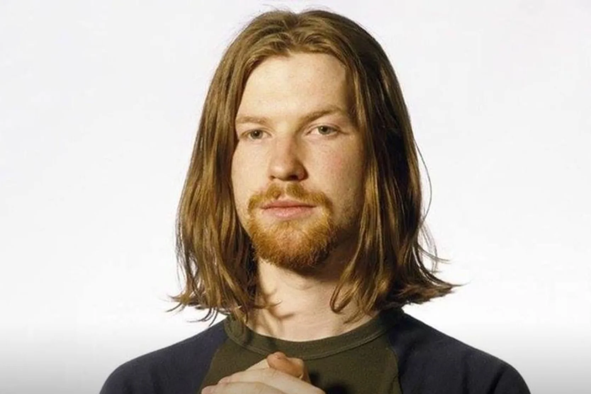

Aphex Twin
Born: 18 August 1971
Age:
Years Active: 1988-present
Genre/s: Electronic, techno, acid, ambient, IDM, jungle, experimental, drill 'n' bass
Label/s: Warp, Rephlex, Apollo, R&S
Richard David James (born 18 August 1971), known professionally as Aphex Twin, is a British musician, composer and DJ active in electronic music since 1988. His idiosyncratic work has drawn on many styles, including techno, ambient, acid, and jungle, and he is closely associated with the intelligent dance music (IDM) genre. Journalists from publications including Mixmag, The New York Times, NME, Fact, Clash and The Guardian have called James one of the most influential and important artists in contemporary electronic music.
James was raised in Cornwall and began DJing at free parties and clubs around the South West in the late 1980s. His debut EP Analogue Bubblebath, released in 1991 on Mighty Force Records, brought James an early following; he began to perform across the UK and continental Europe. James co-founded the independent label Rephlex Records the same year. His 1992 debut album Selected Ambient Works 85–92, released by Belgian label Apollo, garnered wider critical and popular acclaim. James signed to Warp in late 1992 and subsequently released charting albums such as ...I Care Because You Do (1995) and Richard D. James Album (1996), as well as Top 40 singles such as "Come to Daddy" (1997) and "Windowlicker" (1999); the latter two were accompanied by music videos directed by Chris Cunningham and brought James wider international attention.
After releasing Drukqs in 2001 and completing his contract with Warp, James spent several years releasing music on his own Rephlex label, including the 2005 Analord EP series under his AFX alias and a pair of 2007 releases as the Tuss. In 2014 he made available a previously unreleased 1994 LP as Caustic Window. He returned later that year with the Aphex Twin album Syro on Warp, winning the Grammy Award for Best Dance/Electronic Album. He has since released charting EPs including Cheetah (2016) and Collapse (2018). His 2023 single "Blackbox Life Recorder 21f" was nominated for the Grammy Award for Best Dance/Electronic Recording. Since 2015 he has been sporadically releasing music on SoundCloud.